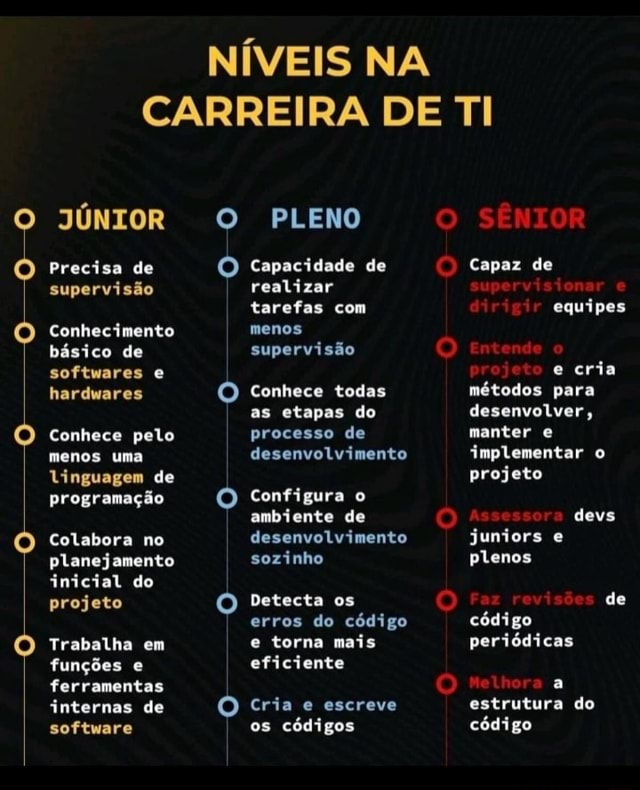

Recursos Multimídia — Programação Web 1
Aula em Vídeo
Vídeo 1 — Introdução ao HTML Semântico. Produção própria, IFAL, 2026.
Tutorial Externo
Vídeo Educacional — "O que é HTML?", disponível no canal Curso em Vídeo via YouTube.
Infográfico de Carreira

Infográfico demonstrando as trilhas de aprendizado para desenvolvedores Fullstack.